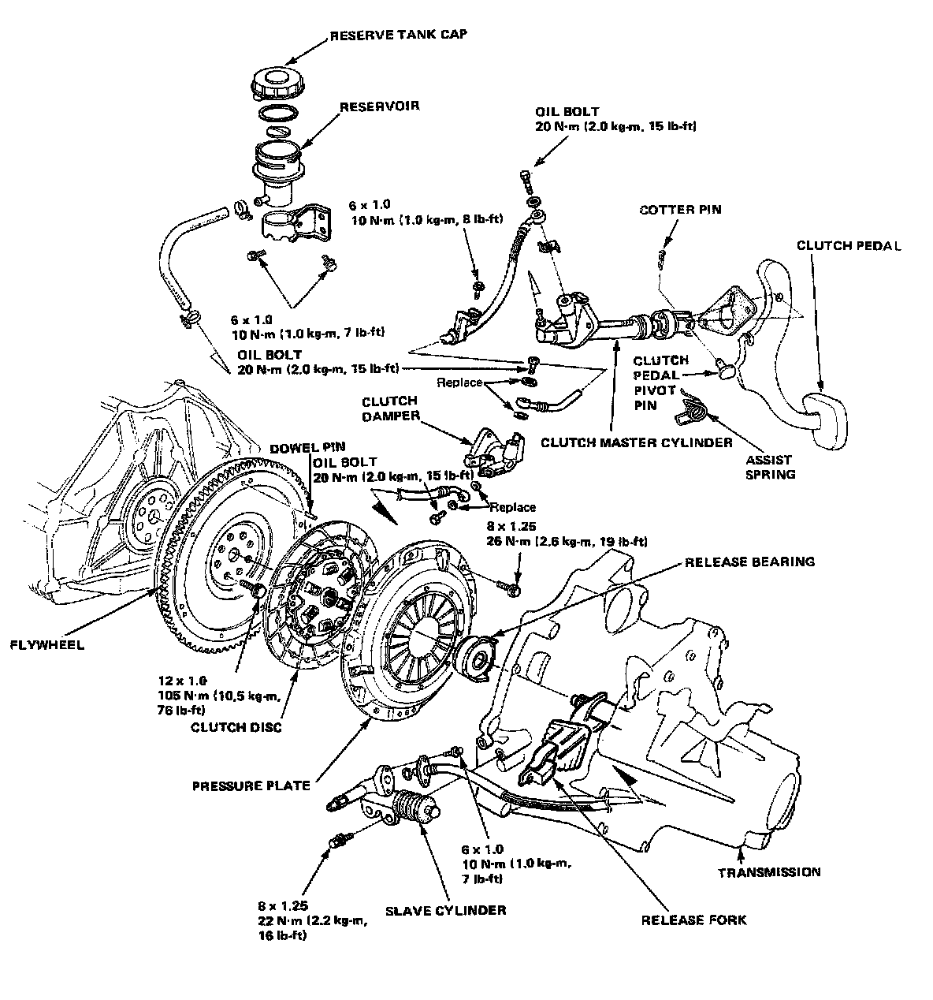
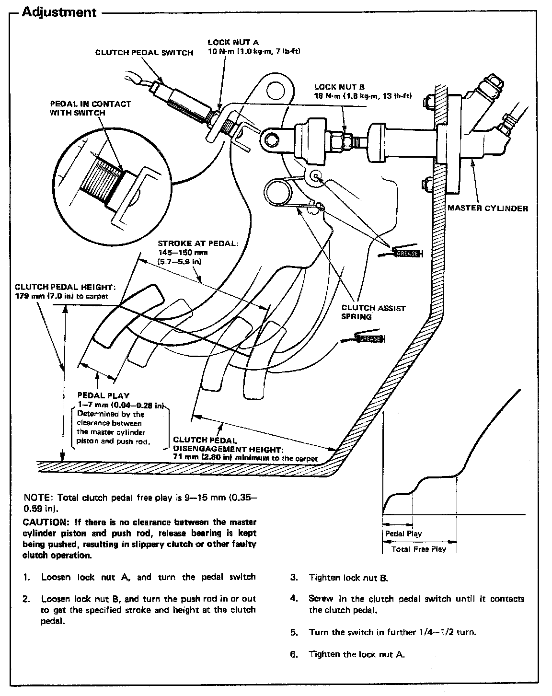
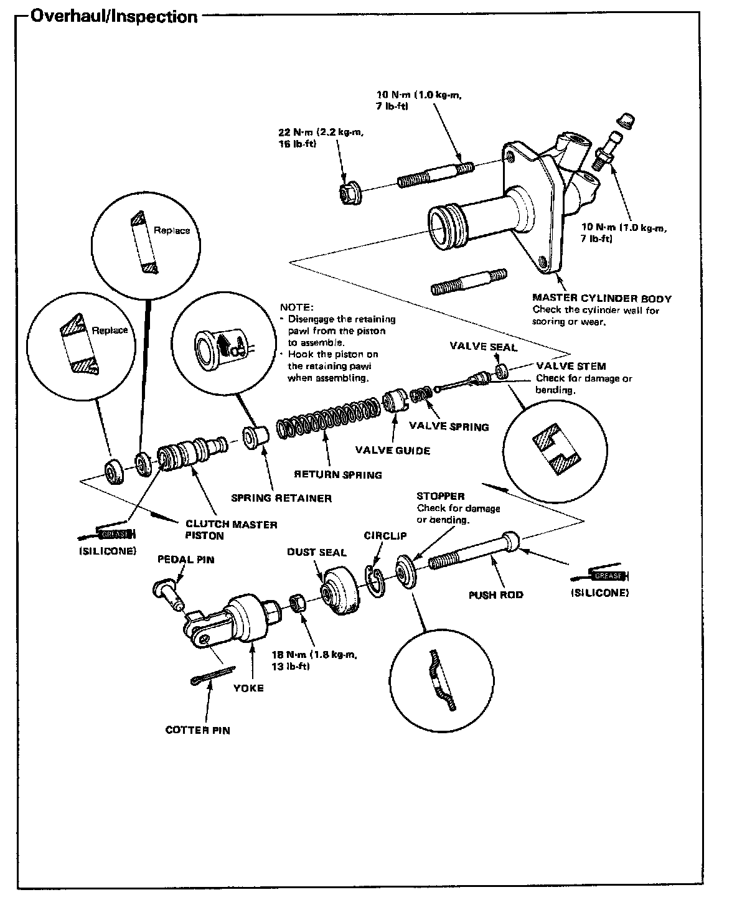
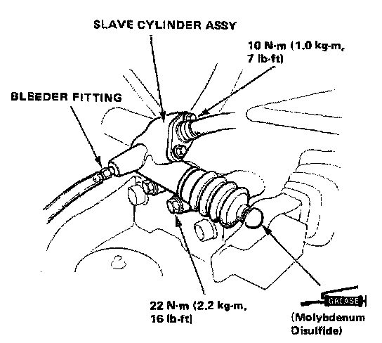
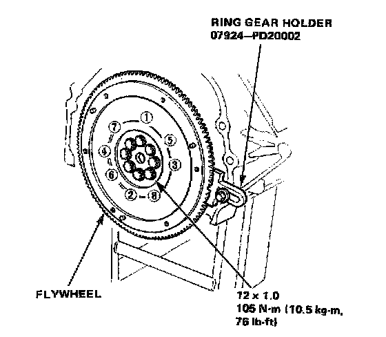
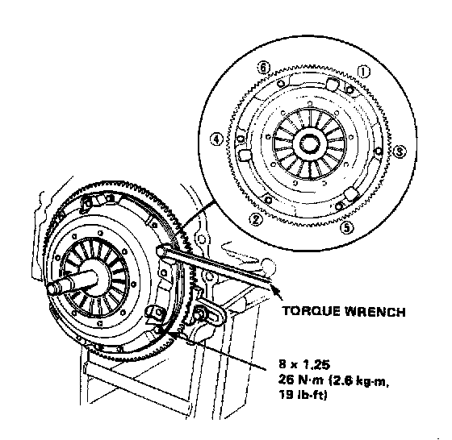
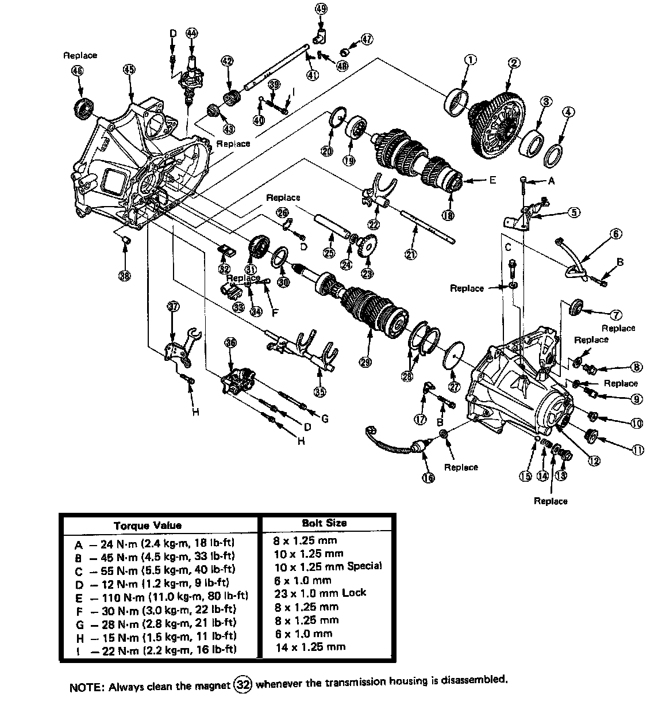
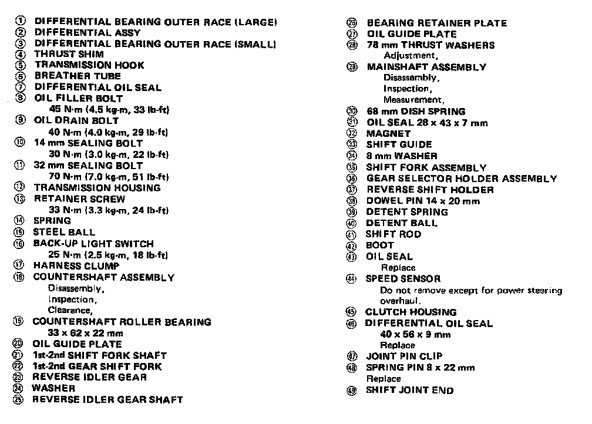
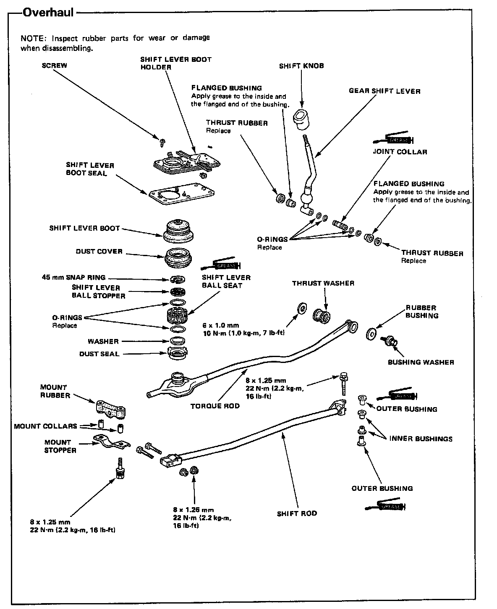

M/T Torque Data
C3P4 5-spd M/T, Clutch Torque:

C3P4 5-spd M/T, Clutch Adjustment/Torque:

C3P4 5-spd M/T, Clutch Master Cylinder Torque:

C3P4 5-spd M/T, Slave Cylinder Torque:

C3P4 5-spd M/T, Flywheel Torque & Sequence:

C3P4 5-spd M/T, Pressure Plate Torque:

C3P4 5-spd M/T, Assembly Torque:

C3P4 5-spd M/T, Torque Legend Cont.:

C3P4 5-spd M/T, Gearshift Mechanism Torque:
